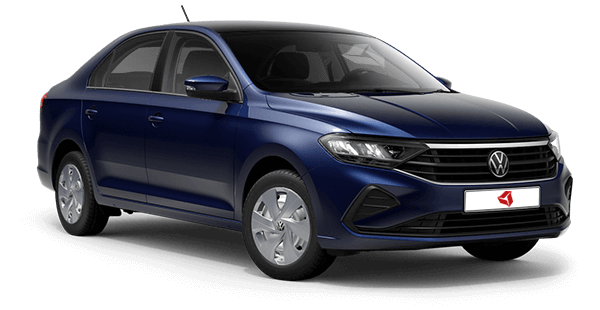
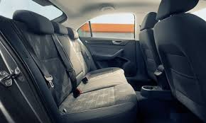

Volkswagen Polo
Краткое описание
Volkswagen Polo — субкомпактный пятиместный хэтчбек. Новинка заметно прибавила в размерах по сравнению с прошлой моделью. Его габаритные размеры составляют: длина 4053 мм, ширина 1751 мм, высота 1446 мм, а еличина колесной базы равняется 2564 миллиметрам.
Подробное описание
Внешний вид
Новый Polo стал первой моделью в России с новым логотипом Volkswagen. Внешний вид нового Polo отличают модернизированная решётка радиатора, новый передний бампер, задний диффузор, а также полностью обновлённая светодиодная оптика.
Интерьер
Все автомобили нового поколения оснащаются мультимедийной системой Composition с поддержкой App-Connect и сенсорным экраном с диагональю 6.5 или 8 дюймов. В интерьере нового Polo появились новые декоративные панели, а также, начиная с комплектации Exclusive, атмосферная подсветка пространства для ног спереди.
Отделка
В каждой комплектации НОВОГО Polo свой вариант отделки сидений, а также уникальный дизайн декоративных вставок передней панели, дверей и центральной консоли. 
Оптика
Уже в стартовой комплектации новый Polo оснащается головными светодиодными фарами рефлекторного или прожекторного типа, в зависимости от версии. Функция противотуманных фар интегрирована в общих блок.
Задние фонари
Дизайн задних светодиодных фонарей также полностью обновлён, теперь они состоят из двух секций, причем вторая, расположенная на крышке багажника, также является активной

Характеристики товара
Технические характеристики
Volkswagen Polo оснащается современными двигателями объемом 1,6 л,
которые производятся на заводе в Калуге и соответствуют экологическому стандарту
Евро-5. Мощность моторов составляет 90 л.с. и 110 л.с.
Также для Volkswagen Polo доступен динамичный двигатель 1.4 л мощностью 125 л.с.,
который идет в паре с 7-ступенчатой автоматической коробкой передач.
Скорость, динамика и расход
Ускорение с места до первой «сотни» занимает у пятидверки 9.2-11.8 секунды,
а её максимальные возможности «упираются» в 184-204 км/ч.
Потребление горючего у автомобиля варьируется от 6 до 6.6 литров на каждые 100 км пробега
в комбинированном режиме.
Конструктивные особенности
В основе «второго» Volkswagen Polo для российского рынка лежит переднеприводная платформа PQ25
с поперечным расположением силовой установки и широким применением стали высокопрочных сортов в конструкции.
По умолчанию автомобиль оснащается независимой подвеской типа McPherson спереди и полузависимой системой со
скручивающейся балкой сзади («по кругу» — со стабилизаторами поперечной устойчивости).
Вне зависимости от версии, лифтбек снабжается реечным рулевым управлением с электромеханическим усилителем.
На передних колесах пятидверки монтируются вентилируемые дисковые тормоза, в то время как в задней части
могут быть установлены либо барабанные устройства (у 90-сильного варианта), либо обычные «блины» (у всех остальных).
Размеры и вес
- Длина, мм: 4469
- Ширина, мм: 1706
- Высота, мм: 1471
- Колесная база, мм: 2591
- Колея передних колес, мм: 1460
- Колея задних колес, мм: 1500
- Объем топливного бака, л: 55
- Объем багажника, л: 530 (1460 литров со сложенными сиденьями 2-го ряда)
- Снаряженная масса, кг: 1185-1305